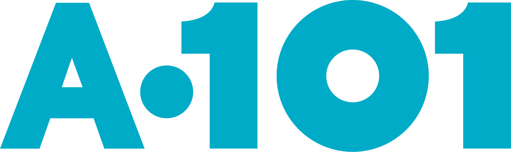

Victoria's Secret &
Bath & Body Works
hizmet teklifi
Kasım 2026
Commerce Lab E-Ticaret Çözümleri A.Ş.
Bu doküman
Kapsam
| # | Bölüm | İçerik |
|---|---|---|
| 01 | Yönetici özeti | Mevcut durum anlayışımız, yaklaşımımız, Commerce LAB'i farklılaştıran noktalar, gelir ve kârlılık etkisi, kullanıcı deneyimi kanıtı, SLA taahhütleri |
| 02 | Çözüm önerimiz | Çözüm kapsamı ve sistem sahipliği, fit-gap özeti, platform bileşenleri, kanal katmanı, çözüm topolojisi, merkezde stok, üründen teslimata değer zinciri, kapsam, AI ile back office |
| 03 | Commerce Lab hakkında | Kim olduğumuz, neden farklıyız, referans müşteriler, liderlik ekibi |
| 04 | Ticari teklif | Proje bedeli, aylık platform ve bakım bedelleri, 3 yıllık toplam sahip olma maliyeti (RFP §15); tüm geliştirmeler fiyata dahil |
| Ek | Tam teklif sunumu | RFP §23.1'in on iki bölümü ve §23.2 zorunlu ekleri: fonksiyonel uyum, mimari, entegrasyon, migrasyon, plan, SLA, ticari yapı, Infosec; ayrı doküman olarak paylaşılır |
01
Yönetici özeti
Mevcut durum, yaklaşım ve iş değeri
Shaya'nın bugününü nasıl okuduğumuz, buna nasıl yaklaştığımız ve önerdiğimiz yapının gelire ve kâra katkısı.
Mevcut durum anlayışımız
Shaya Group için geleceğin dijital ticaret mimarisi
Shaya Group, Türkiye perakendesinin en güçlü ve prestijli markalarından Victoria’s Secret ve Bath & Body Works için yalnızca bugünün ihtiyaçlarını karşılayan değil, dijital ticaretin geleceğine yön verecek, esnek, ölçeklenebilir ve sürdürülebilir bir teknoloji altyapısı oluşturmayı hedeflemektedir.
Bu altyapının geleneksel e-ticaretin ötesine geçerek omnichannel ve agentic commerce gibi yeni nesil alışveriş deneyimlerini, B2B ve B2B2C gibi farklı iş modellerini desteklemesi; multi-site, multi-company ve multi-country yetkinlikleriyle yeni markalara, pazarlara ve iş fırsatlarına ilk günden hazır olması gerekmektedir. Ancak asıl hedef, teknolojik dönüşümün ötesinde, müşteri deneyimini sürekli iyileştiren, satışları büyüten, operasyonel verimliliği artıran ve kârlılığa doğrudan katkı sağlayan bir dijital ticaret ekosistemi yaratmaktır.
Commerce LAB olarak, uçtan uca ticaret operasyonlarını kapsayan kapsamlı ürün ailemiz, kanıtlanmış teknolojik ve operasyonel performansımız, AI odaklı inovasyon vizyonumuz ve hepsinden önemlisi iş ortaklığı anlayışımızla, Shaya Group'un bu dönüşüm yolculuğunda ihtiyaç duyduğu en doğru ve güçlü iş ortağı olacağımıza inanıyoruz.
Hedef
- En iyi müşteri deneyimi
- En yüksek satış ve kârlılık
- En düşük operasyonel maliyet
Hazır olunması gerekenler
Agentic commerce
Omnichannel
B2B
B2B2C
Multi-site
Multi-company
Multi-country
Yaklaşımımız
Platform sağlayıcılığının ötesinde, ticari değer yaratma yaklaşımı
Hedefimiz, Shaya'nın tüm satış kanallarını merkezi bir yapı üzerinden yöneterek satış performansını, operasyonel verimliliği ve kârlılığı sürekli iyileştiren bütünleşik bir dijital ticaret modeli oluşturmaktır. Commerce LAB olarak bu modelde kendimizi yalnızca bir teknoloji sağlayıcısı değil, Shaya'nın kendi dijital IT departmanı gibi konumlanan, ticari hedeflerini sahiplenen ve bu hedefler doğrultusunda sürekli çözüm geliştiren bir iş ortağı olarak görüyoruz.
01 · Tek kontrol noktası
Tüm kanallar Commerce Lab'de
Web, uygulama, pazaryerleri ve mağaza aynı platformdan yönetilir; ürün, fiyat, stok ve kampanya bir kez tanımlanır, her kanala doğru kuralla gider.
02 · AI-Enabled Commerce
Ticaretin Her Aşamasında YZ
Ürün zenginleştirme, sayfa, içerik ve kampanya yönetimi, semantik arama ve doğal dil ile operasyon yönetimi, manuel iş yükünün minimizasyonu.
03 · Marj için karar
Her işlem maliyete göre
Ürün hangi kanalda satılacak, ödeme hangi bankadan geçecek, paket hangi kargoyla gidecek: her karar otomatik ve marj gözetilerek verilir.
04 · Çalışma modeli
IT departmanınız gibi
Bir kez proje yapıp her yeni isteği ayrı projeye ve ek faturaya çevirmiyoruz. Ticareti artıracak her geliştirme hizmetin içinde.
Neden Commerce Lab
Commerce LAB'i farklılaştıran noktalar
| # | Fark | Ne demek | Shaya için |
|---|---|---|---|
| 01 | En kapsamlı ürün | Commerce, PIM, CMS, kampanya, ödeme, pazaryeri, OMS, TMS ve WMS tek platformda; piyasadaki rakiplerin hepsinden geniş kapsam | Yeni ihtiyaç, yeni tedarikçi ve yeni entegrasyon demek değil |
| 02 | IT departmanınız gibi | Ticareti artıracak her şeyi geliştiririz; tek seferlik proje + her istek için ek ücret modeli yok | Yol haritası bütçe pazarlığına takılmaz |
| 03 | AI bugün çalışıyor | MCP ile konuşarak yönetim, AI PIM, semantik arama, agentic commerce (UCP/ACP); ACOMS ile otonom operasyon yol haritası | Back office işleri prompt ile yapılır |
| 04 | En iyi UX metrikleri | Tüm sitelerimiz mobil Core Web Vitals'ı geçiyor, ana rakipte %8; mobil LCP 1,0 sn, ana rakipte 2,75 sn | Daha hızlı sayfa, daha yüksek dönüşüm |
| 05 | TMS dahil | Kargo seçimi, etiket, takip ve kargo performansı platformun içinde; rakip platformlarda yok | Kargo giderinde %10–15 iyileşme |
| 06 | Bestseller yönlendirme | Satış hızına göre tükenecek ürünler komisyonu düşük kanala yönlendirilir | Kâr-zarara +1,5–3 puan |
| 07 | Kendi Payment Gateway'imiz | Shopify ve benzeri platformlardaki gibi ek gateway ücreti yok; işlem en uygun marjlı bankaya yönlenir | Satışın %0,5–1'i kadar tasarruf |
| 08 | Entegrasyon hızı, Control Tower | Sipariş 1,2 sn'de OMS'te; yok satma, gecikme ve pazaryeri mutabakatsızlığı otomatik yakalanır ve düzeltilir | Yok satma %0,02; satışın %0,5–1'i kadar iptal engellenir, ceza yok |
| 09 | Merkezde stok | OMS yerinde kalır, ERP doğrudan Commerce Lab'e bağlanır (opsiyonel); stok senkronizasyonunda bir ara durak kalkar | Stok değişimi 925 ms'de kanalda |
| 10 | En iddialı SLA | %99,95 erişilebilirlik, ana sayfa ve ürün sayfası < 1,5 sn, checkout < 2 sn, P1 olayda 15 dk çözüm | Taahhüt ölçülen %99,99'a dayanır |
| 11 | Tam fonksiyonel uyum | RFP'nin 69 gereksiniminin 69'u konfigürasyonla karşılanır; özel geliştirme, üçüncü taraf ürün ya da yol haritası bekleyen madde yok | Fit-gap riski yok; detay teyidi keşifte |
İş faydası · gelir
Aynı trafikten daha fazla satış
+%35dönüşüm oranı; replatform sonrası ilk 2 ay
+%7ortalama sepet tutarı (AOV), aynı dönem
+%2–3toplam satışa mağaza içi ek satış
~%0,5satış yok satmadan kurtarılır
| Kaldıraç | Nasıl | Etki |
|---|---|---|
| Dönüşüm ve sepet | 1 saniyenin altında açılan sayfalar, semantik arama, sadeleşen checkout, puan + kart ile ödeme | +%35 dönüşüm, +%7 AOV; referans müşteride replatform sonrası ilk 2 ay |
| Mağaza içi satış | Mağazada olmayan beden ve renk InStore Commerce ile satılır, ödeme mağazada kartla (card present) alınır | Toplam satışın %2–3'ü kadar ek satış |
| Yok satma | Hızlı entegrasyon ve Control Tower; stok değişimi 925 ms'de kanalda, uyuşmazlık otomatik düzeltilir | Yok satma %0,02; satışın ~%0,5'i kurtarılır, pazaryeri cezaları önlenir |
Kaba tahmin: Commerce Lab müşterilerinde ölçülen değerler. Shaya için baz değerler keşif fazında alınır, go-live sonrası ilk 30 gün günlük karşılaştırılır.
İş faydası · kârlılık
Kâr-zarara 3–5,5 puan doğrudan katkı
| Kaldıraç | Mekanizma | Hesap | Kâr-zarar etkisi |
|---|---|---|---|
| Kanal yönlendirme | Satış hızına göre tükenecek bestseller ürünler pazaryerlerinde satışa kapatılır, kendi kanalda (web ve app) satılır | Satışın %15–20'si × kaçınılan %10–15 komisyon | +1,5–3 puan |
| Payment Gateway | Kendi gateway'imiz; otomatik dispatch ile en uygun marjlı bankadan işlem. Masterpass anlaşmamızla kart saklama, doğrudan Masterpass maliyetinin altında | Müşterilerimizde ölçülmüş: satışın %0,5–1'i | +0,5–1 puan |
| Kargo kararı · TMS | Kargo ataması serbest siparişlerde firma; maliyet, bölge ve performansa göre otomatik seçilir | Satışın ~%10'u kargo gideri × %10–15 iyileşme | +1–1,5 puan |
| Toplam | +3–5,5 puan |
Ürün operasyonu
~1,5 kişilik iş yükü kalkar
ERP'den gelen ürün fotoğraftan otomatik zenginleştirilir; kategori ve nitelik eşlemesi her satış kanalına otomatik yapılır.
Back office
Ekran değil, prompt
Sayfa oluşturma, kampanya, fiyat ve stok düzeltme gibi işler AI destekli, prompt ile yapılır; ekip ticarete odaklanır.
Kaba tahmin: varsayımlar keşif fazında Shaya'nın kanal karması, komisyon oranları, banka anlaşmaları ve kargo giderleriyle netleştirilir. Gelir etkisi (dönüşüm, AOV, mağaza içi satış) bu toplama dahil değildir.
Kanıt · kullanıcı deneyimi
Gerçek kullanıcıda sayfa 1 saniyede açılıyor
Tüm sitelermobil Core Web Vitals'ı geçiyor; ana rakipte %8
1,0 snmobil LCP; ana rakipte 2,75 sn
0,4 snmobil TTFB; ana rakipte 1,35 sn
169 msmobil INP; ana rakipte 241 ms
| Ölçü · p75, gerçek kullanıcı | CommerceLab · canlı siteler | Ana rakip · canlı siteler | Google eşiği |
|---|---|---|---|
| Mobil Core Web Vitals geçen site | Tüm siteler | %8 | LCP, INP ve CLS üçü birden "iyi" |
| Masaüstü Core Web Vitals geçen site | %71 | %8 | |
| Mobil LCP | 1,0 sn | 2,75 sn | ≤ 2,5 sn |
| Masaüstü LCP | 0,8 sn | 1,9 sn | ≤ 2,5 sn |
| Mobil CLS | 0,00 | 0,085 | ≤ 0,1 |
| Sunucu ilk bayt, aynı ağdan lab ölçümü | 51 ms | 201 ms | — |
Google CrUX, origin medyanı, 29 Ekim 2026. CommerceLab'in canlı moda ve perakende siteleri ile Türkiye'deki ana rakip altyapısında çalışan moda ve perakende siteleri; aynı dönem, aynı ölçüm.
SLA taahhütleri
En iddialı taahhüt: %99,95 erişilebilirlik
%99,95aylık erişilebilirlik taahhüdü; bugün ölçülen %99,99
< 1,5 snana sayfa ve ürün sayfası yüklenme
< 2 sncheckout yüklenme
15 dkP1 olayda çözüm; yanıt 5 dk
| Seviye | Örnek etki | Yanıt | Müdahale | Geçici çözüm | Kalıcı çözüm |
|---|---|---|---|---|---|
| P1 · Critical | Site veya app erişilemiyor, sipariş ya da ödeme alınamıyor | 5 dk | 15 dk | 15 dk | 2 saat |
| P2 · High | OMS entegrasyon kesintisi, kargo, sadakat ve stok servisleri | 15 dk | 30 dk | 2 saat | 8 saat |
| P3 · Medium | CMS yayın, arama sonucu, yönetim paneli hataları | 1 saat | 2 saat | 4 saat | 1 iş günü |
| P4 · Low | UI, içerik, metin ve rapor talepleri | 1 iş günü | — | 3 iş günü | Planlı sürüm |
P1/P2 alarmları otomatik açılır, 7/24 nöbet; aylık servis raporu ve SLA review. Servis kredisi koşulları ticari teklifte.
02
Çözüm önerimiz
Tüm kanallar tek kontrol noktasında
Satış kanalları Commerce Lab'de; ERP, OMS ve CRM yerinde kalır. Stok merkezde hesaplanır, ödeme ve kargo kararları marj gözetilerek verilir.
Çözüm kapsamı ve sistem sahipliği · RFP §5
Ne biz yapıyoruz, ne yerinde kalıyor
| Bileşen | CommerceLab rolü | Mevcut sistem / sahiplik | Teklif durumu |
|---|---|---|---|
| Web ve mobil uygulama | Deneyim, sepet, checkout, hesap; iki marka için ayrı site ve app | Marka dijital kanalları (Ticimax'tan geçiş) | Kapsamda |
| Katalog / PIM | Zenginleştirme, varyant, medya, kanal içeriği, yayın | WinRetail ürün, fiyat ve kategori ana verisi | Kapsamda |
| İçerik / CMS | Drag & drop sayfa, banner, landing, blog; web + app | — | Kapsamda |
| Siparişler | Oluşturma, OMS'e devir, durum görünümü, Unified Order History | Retail Markup OMS: yaşam döngüsü, satılabilir stok, kargo, iade | Entegrasyon |
| Müşteri ve sadakat | Operasyonel müşteri deneyimi: hesap, adres, izin, istek listesi | CRM: müşteri master, puan, tier, kupon, kampanya kuralı | Entegrasyon |
| Kampanya ve promosyon | Sepet seviyesi kural motoru; CRM kurallarını tekrarlamaz, tamamlar | CRM kampanya ve kupon yönetimi | Kapsamda |
| Ödeme | Ödeme orkestrasyonu, 3D, fraud, multi-tender, mutabakat | PSP ve bankalar | Kapsamda |
| Pazaryeri | Marketplace Seller: ürün kartı, stok, fiyat, sipariş | Trendyol, Hepsiburada, Amazon | Kapsamda |
| TMS | Kargo firması kararı, etiket, takip ve kargo performansı; ücretsiz | Kargo firmaları | Kapsamda |
| OMS · WMS kurulumu | Teklif dışı; ileride aynı platformda açılabilir | Mevcut sistemler | Kapsam dışı |
Fit-gap özeti · RFP §6, §7 ve Ek A
69 gereksinim, 69 konfigürasyon; özel geliştirme yok
69gereksinim satırı
69C · konfigürasyon ile
0D geliştirme · T üçüncü taraf · N karşılanmıyor
| RFP bölümü | Satır | Ana modül |
|---|---|---|
| 6.1 Ürün ve katalog yönetimi | 10 | PIM / Katalog, Search, ComHub |
| 6.2 Arama ve navigasyon | 5 | Search / Headless Experience |
| 6.3 Ürün detay, sepet ve checkout | 8 | Payment / Checkout, Kampanya, CRM |
| 6.5 İçerik, kampanya ve yönetim paneli | 6 | Headless CMS / AppShop |
| 6.6 SEO yönetimi (16 alt başlık) | 37 | Headless Experience / SEO, CMS, PIM |
| 7 Omnichannel | 3 | Headless Experience, ComHub, OMS |
Yanıt kodu tanımı
C = standart ürün, konfigürasyonla
Hiçbir satır özel geliştirme, üçüncü taraf ürün ya da yol haritası gerektirmez. Sıralama algoritması (FR-TEXT-004) için proje özelinde özel kural eklenebilir; kupon ve gift card üçüncü taraf sistemdeyse (FR-023) entegrasyon kapsamdadır.
Doğrulama durumu
Çoğu satır "doküman destekli"; arama, 3D/fraud, CMS drag & drop ve deeplink satırları ürün ekibi teknik teyidinde; omnichannel satırları OMS arayüz tasarımına bağlı. §6.4 müşteri ve üyelik matriste satır olarak açılmamıştır; karşılığı ayrı slaytta.
Platform bileşenleri
On paketlenmiş ürün, tek ekosistem
KanallarWebShop (Next.js) · AppShop (native iOS, Android) · pazaryeri · ileride POS, chat, voice, agentic
DeneyimHeadless Experience Layer: ayrık, omnichannel storefront ve native uygulamalar; REST / GraphQL
OrkestrasyonCommerce Dispatch Engine: her satın alma bağlamını (marka, kanal, segment) doğru yeteneğe yönlendirir
Core commercePIM / Katalog Headless CMS Kampanya motoru Payment / Checkout Operasyonel CRM Marketplace Seller Marketplace Operator
Tedarik zinciriOMS · Inventory Engine, InStore Commerce TMS · opsiyonel WMS OMS kısmen: stok ERP ile senkron, mağazada satış; TMS opsiyon: sevkiyat, bildirim, takip, etiket; WMS kapsam dışı
EntegrasyonComHub · Orchestration Manager · Control Tower: ERP, OMS, CRM, PSP, pazaryeri, kargo, pazarlama, analitik
AIMCP olarak yayınlı API'ler · LLM Socket ile konuşarak operasyon · AI PIM · semantik arama · conversational ve agentic commerce (UCP / ACP) · ACOMS: yarı otonom operasyon yol haritası
Koyu rozet teklif kapsamındaki PBC'ler: Shaya için altı PBC ve OMS kısmen; açık rozet aynı platformda hazır, Shaya için opsiyon. Her PBC bağımsız sürümlenen bir Packaged Business Capability'dir.
Kanal katmanı · RFP §5.1.1
Dört kanal, tek Commerce Platform
Web
Next.js · responsive · PWA
SSR ve statik üretim; ürün listesi, fiyat ve linkler ilk HTML'de. Çalışma anında render yok, JAMstack dağıtım, CDN önünde. Marka başına ayrı tasarım ve domain.
iOS
Native uygulama
Aynı GraphQL API; yeni tasarıma geçiş kapsamda. CMS bileşenleri uygulama güncellemesi gerektirmeden yayınlanır; deeplink, push, Adjust attribution.
Android
Native uygulama
iOS ile ortak bileşen sözleşmesi; app-only kampanya ve banner; in-app browser ile dış link; mağaza bulucu ve Click & Collect akışları.
Pazaryeri
Trendyol · Hepsiburada · Amazon
Marketplace Seller ile çift yönlü: ürün kartı, stok, fiyat ve sipariş. Kanal bazlı emniyet stoğu, mutabakat ve otomatik düzeltme; sipariş platformda oluşur, OMS'e devredilir.
Tüm kanallar aynı katalog, stok, fiyat, kampanya ve müşteri servislerini kullanır; kanal bazlı görünürlük ve içerik farkı konsoldan yönetilir (RFP §6.1 yayın ve görünürlük).
Çözüm topolojisi
Kanallar Commerce Lab'de, stok merkezde
Merkezde stok
Stok senkronizasyonunda bir durak eksik
RFP'deki model
WinRetail ERPürün · fiyat · fiziksel stok
→
OMSsatılabilir stok hesabı
→
E-ticaret platformukanal kuralları
→
Kanallarweb · app · pazaryeri
Önerimiz
WinRetail ERPürün · fiyat · fiziksel stok
→
Commerce Lab Inventory Enginesatılabilir stok, emniyet stoku, kanal kuralı
→
Tüm kanallarweb · app · pazaryeri · mağaza
150 msstok hesabı; emniyet stoku, yoldaki stok ve rezervasyon dahil
925 msstok değişimi kanala bildirildi
%0,02yok satma, tüm kanallarda
1,2 snweb ve app siparişi OMS'te
OMS değişmez: sourcing, fulfillment, sevkiyat ve iade OMS'te kalır. Değişen, stoğun kanala giden yolu: ara durak kalktığı için kampanya zirvesinde bile kanal stoğu ERP ile aynı kalır.
Üründen teslimata
Her adım marj için çalışır
01ÜrünERP'den ürün, fiyat ve stok gelir; fotoğraftan nitelik ve açıklama AI ile üretilir.~1,5 kişilik iş yükü kalkar
02Kanala yayınKategori ve nitelik her satış kanalına otomatik eşlenir, ürün kanallara gönderilir.Manuel eşleme yok
03Sayfa ve içerikSayfa oluşturma ve düzenleme prompt ile, AI destekli; web ve app tek panelde.Kampanya günler değil saatler içinde
04Kanal yönlendirmeSatış hızına göre tükenecek bestseller'lar pazaryerinde kapanır, kendi kanalda satılır.+1,5–3 puan kâr
05ÖdemeKendi gateway'imiz en uygun marjlı bankayı seçer; Masterpass ile kart saklama.Satışın %0,5–1'i tasarruf
06KargoAtama serbest siparişte kargo firması maliyet ve performansa göre seçilir.Kargo giderinde −%10–15
07MağazaMağazada olmayan ürün InStore Commerce ile satılır, ödeme kartla mağazada alınır.+%2–3 ek satış
Tüm adımlar Control Tower'ın izlemesinde: yok satma, entegrasyon gecikmesi ve pazaryeri mutabakatsızlığı müşteriden önce yakalanır ve otomatik düzeltilir.
Teklif kapsamı
On modül bizde; ERP, OMS ve CRM yerinde kalır
| Modül | Ne yapar | Durum |
|---|---|---|
| WebShop ve AppShop | İki marka için ayrı site ve native iOS/Android uygulama; yeni tasarım, 1 saniyenin altında sayfa | Kapsamda |
| AI PIM ve kanal eşleme | ERP'den gelen ürünü fotoğraftan zenginleştirir, her satış kanalına kategori ve nitelik eşlemesiyle gönderir | Kapsamda |
| Headless CMS | Sayfa ve içerik prompt ile veya sürükle-bırak; web ve app tek panel | Kapsamda |
| Kampanya motoru | Sepet seviyesi kurallar; CRM'deki sadakat ve kupon kurallarını tamamlar | Kapsamda |
| Inventory Engine | ERP stoğunu doğrudan alır, satılabilir stoğu hesaplar, tüm kanallara dağıtır (daha hızlı stok senkronizasyonu için) | Opsiyonel |
| Marketplace Seller | Pazaryeri ürün, stok, fiyat ve sipariş yönetimi; bestseller kanal yönlendirme | Kapsamda |
| Payment Gateway | Banka dispatch, 3D ve fraud, puan + kart ile ödeme, Masterpass ile kart saklama | Kapsamda |
| TMS | Kargo firması kararı, etiket, takip ve kargo performansı | Kapsamda |
| InStore Commerce | Mağazada olmayan ürünün satışı; mağazada kartla ödeme | Kapsamda |
| ComHub ve Control Tower | Entegrasyon, izleme, otomatik düzeltme, pazaryeri mutabakatı | Kapsamda |
| ERP · OMS · CRM | WinRetail ana veri; OMS sourcing ve fulfillment; CRM müşteri ve sadakat | Shaya'da kalır |
AI ile back office
Back office işleri prompt ile yapılır
Ürün
Fotoğraftan PIM
Sınıflandırma, nitelik, içerik ve açıklama fotoğraftan üretilir; kategori ağacı ve nitelik eşlemesi her kanala otomatik. 21K aktif SKU'da sezon açılışı hızlanır.
İçerik
Prompt ile sayfa
"Yeni koleksiyon landing sayfası" yazılır; taslak CMS bileşenleriyle kurulur, web ve app'te önizlenir, onaydan sonra zamanlı yayınlanır.
Operasyon
Sor, yaptır
Tüm API'ler MCP olarak yayınlı: kampanya açma, fiyat ve stok düzeltme, sipariş müdahalesi ekran ezberi gerektirmez; ticari analiz tek soruda.
Prompt"Hafta sonu %20 sepet kampanyası"
→
Taslakkampanya ve sayfa
→
Önizlemeweb ve app
→
Onayrol ve iş akışı
→
Yayınzamanlı · audit log
Kontrol sizde: AI öneriyi ve taslağı hazırlar; her yazma işlemi rol yetkisi ve onay akışından geçer, audit log'a yazılır. Veri tenant sınırının dışına çıkmaz.
03
RFP §23.1 · 2 and §16
Company profile and references
A team that came out of retail, an end-to-end commerce and operations platform of its own making, live deployments at Türkiye's leading brands.
Who we are
Commerce and operations for enterprises, on one platform
CommerceLab is a cloud-based enterprise Commerce & Supply Chain platform. It runs every sales channel, business model and operational need from a single, flexible and scalable system: a Commerce ERP / operating system.
- Vision: to be one of the leading platform providers in digital commerce and operations.
- Mission: help our customers maximise sales potential while achieving operational excellence at minimal cost.
- Company: Commerce Lab E-Ticaret Çözümleri A.Ş. · Windowist Tower, Maslak, İstanbul · a software product company run by its co-founders.
30+specialists; experience at 100+ leading retailers in Türkiye
$400M+annual commerce volume (GMV) through the platform; 50K+ orders a day
1B+API calls; 99.99%+ availability, response time < 500 ms
Positioning
Why we are different
01
360° coverage
Products spanning the full commerce and supply-chain stack with maximum extensibility. A module you do not use today opens on the same platform tomorrow.
02
Built by operators
A team that built e-commerce and IT at Boyner, Beymen, Koton and Demsa; hands-on retail experience behind every product decision.
03
Sales × operations
We close the gap between selling and fulfilling end to end: from the experience layer to orders, inventory and logistics.
04
Your extended team
Custom needs are met with a tailor-made approach; we work like your digital IT department rather than shipping software and leaving. Every sprint produces a measurable business outcome.
05
No vendor lock-in
A product company that creates no version complexity and no closed ecosystem; with Open API and full export, data and URLs are always yours.
06
AI-powered platform
Inside the product (AI PIM, search, conversational commerce) and while building it (AI-assisted code, tests and review); ACOMS roadmap towards semi-autonomous operations.
Reference customers


Fashion, footwear, home, retail and QSR brands on one platform

Leadership team
Hands-on leadership, 30+ engineers
Onur Kemer
Co-founder · CEO
- 25 years of industry experience
- Built and led IT and e-commerce departments at Boyner, Demsa and Koton
- Led Boyner Software and Business Development
- ERP and production-planning engineering (iCron, Ariva)
YTÜ Computer Engineering, 2002
İsmail Danacı
Co-founder · CTO
- 20 years of industry experience
- Built the CommerceLab e-commerce platform (v1)
- Boyner and Koton e-commerce infrastructure
- Boyner POS systems · ERP engineering (Bilteks)
Sakarya University, Computer Programming, 2008
Arif Kula
CPO · Chief Product Officer
- 32 years of industry experience
- Boyner CTO (3 yrs) · Beymen CTO (12 yrs)
- Boyner IT Manager (8 yrs)
- DorukNet, software engineer (4 yrs)
İTÜ Mathematics Engineering, 1992
Hakan Gürses
Software Development Manager · Architect
- 21 years of experience
- Built the CommerceLab e-commerce platform (v1)
- Marketplace integration platform (Altınyıldız)
- Boyner CRM · Medical Park stream data processing
Yeditepe Computer Eng., 2005 · Doğuş Univ. PhD, 2014
Faruk Öksüz
Software Development Manager · Architect
- 30 years of industry experience
- IBM POS systems, Software Development Director (14 yrs)
- Campaign systems · loyalty · distributed data
- Pfizer software manager
ODTÜ Computer Engineering, 1999
Gökhan Koçak
Software Development Manager · Architect
- 22 years of experience
- Built the CommerceLab e-commerce platform (v1)
- 5px Software & Project, co-founder
- RND E-Commerce Solutions CTO · launched 30 e-commerce systems
Uludağ University, 2004
04
RFP §15
Ticari teklif
Tek seferlik proje bedeli, aylık platform ve bakım bedelleri, 3 yıllık toplam sahip olma maliyeti. Tüm geliştirmeler fiyata dahildir: ek proje, change request veya geliştirme faturası yoktur.
Proje bedeli · tek seferlik · RFP §15.1
2 marka için tüm ek geliştirme, uyarlama ve entegrasyonlar dahil: 55K $
| # | Ürün ve hizmet | Teklif | Açıklama |
|---|---|---|---|
| 1.1 | Unified Commerce Cloud uyarlama ve entegrasyon | 25.000 $ | Tüm özelleştirilmiş istek ve entegrasyonlar fiyata dahildir. |
| 1.2 | Web Shop · 2 marka | 15.000 $ | Victoria's Secret ve Bath & Body Works için ayrı site. Tasarım ücreti dahil değildir, talep edilmesi halinde sunulur. |
| 1.3 | App Shop · 2 marka | 15.000 $ | Victoria's Secret ve Bath & Body Works için ayrı native iOS ve Android uygulama. Uygulama tasarım ücreti dahil değildir, talep edilmesi halinde sunulur. |
| 1.4 | İş geliştirme ve yönetim danışmanlığı | Bedelsiz | İhtiyaç analizi, tasarım ve 3. parti ürün seçimlerinde yönlendirme; iş hedefleri, strateji ve yol haritasında danışmanlık. Proje ekibinde Onur Kemer, İsmail Danacı ve Arif Kula yer alır. |
| Toplam | 55.000 $ |
Tüm geliştirmeler dahil Özelleştirilmiş istekler ve entegrasyonlar proje bedelinin içinde; ek geliştirme bedeli yok.
Proje tamamlanma süresi 5 ay olarak öngörülmüştür. Fiyatlara KDV dahil değildir.
Aylık bedeller · RFP §15.2
Tüm geliştirmeler aylık bedele dahil
| Kalem | Bedel | Kapsam |
|---|---|---|
| Unified Commerce Cloud | Sipariş tutarının %1'i | Tüm geliştirme talepleri (satış artırıcı ve jenerik); ürünlere gelen yeni özellikler; 2 haftalık periyotlarla devreye alım; 7/24 kullanıcı bakım ve destek |
| Web Shop | %1'e dahil | |
| App Shop | %1'e dahil | |
| Marketplace Management Platform | Sipariş tutarının %0,5'i | Tüm pazaryerleri dahil; geliştirme talepleri ve 7/24 destek aynı kapsamda |
| OMS | N/A | Shaya'nın mevcut OMS'i ile entegre çalışılır |
| TMS | Ücretsiz | Kargo firması kararı, etiket, takip ve kargo performansı |
| Sistem barındırma · canlı · 2 marka | 3.500 $ / ay | AWS üzerinde anında ölçeklenen yapı; tüm entegrasyonlar ve uygulamalar 7/24 proaktif izlenir ve çözümlenir |
| Sistem barındırma · test · 2 marka | 500 $ / ay |
Ek geliştirme bedeli yok, sabit lisans yok Platform bedeli siparişe bağlı; her yeni ihtiyaç ayrı proje ve ek fatura değil, aylık bedelin içinde.
Fiyatlara KDV dahil değildir. Sipariş tutarı iptal sonrası KDV hariç tutar üzerinden hesaplanır. Ödeme vadesi fatura tarihinden itibaren 30 gündür.
3 yıllık toplam sahip olma maliyeti · RFP §15.3
TCO · tüm ek geliştirmeler ve ürün yenilikleri dahil
Varsayımlar
| Parametre | 1. yıl | 2. yıl | 3. yıl |
|---|---|---|---|
| Sipariş tutarı · KDV dahil, büyüme %50 ve %40 | 1.125 M TL | 1.687,5 M TL | 2.362,5 M TL |
| Komisyon bazı · KDV hariç, iptal sonrası | 982 M TL | 1.473 M TL | 2.062 M TL |
| USD/TL kuru | 70,00 | 90,00 | 115,00 |
1. yıl: 450.000 sipariş × 2.500 TL ortalama sepet (KDV dahil); sipariş tutarı 2. yılda %50, 3. yılda %40 büyür. KDV %10 ve iptal %4 düşülerek komisyon bazına ulaşılır. Siparişlerin %15'i pazaryerinden (%0,5), %85'i diğer kanallardan (%1) gelir; karma oran %0,925. USD/TL kuru varsayımı 70 / 90 / 115'tir. Net satış: KDV hariç, iptal sonrası sipariş tutarı; iadeler düşülmemiştir. Barındırma bedeli üç yıl boyunca sabittir.
3 yıllık toplam sahip olma maliyeti
| Kalem | 1. yıl | 2. yıl | 3. yıl | 3 yıl toplam |
|---|---|---|---|---|
| Proje bedeli · tek seferlik | 55.000 $ | — | — | 55.000 $ |
| Platform kullanımı · karma %0,925 | 129.740 $ | 151.364 $ | 165.842 $ | 446.946 $ |
| Sistem barındırma · canlı ve test | 48.000 $ | 48.000 $ | 48.000 $ | 144.000 $ |
| Toplam | 232.740 $ | 199.364 $ | 213.842 $ | 645.946 $ |
| Net satışa oranı | %1,66 | %1,22 | %1,19 | %1,34 |